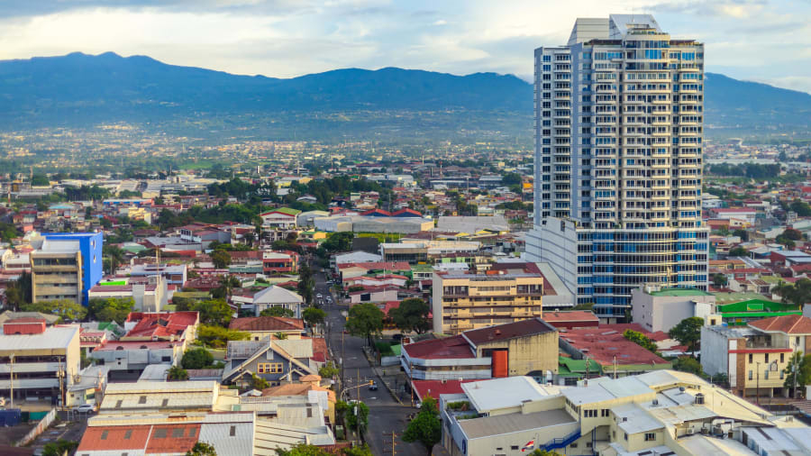

Guanacaste, una provincia en la frontera del Pacífico y al noroeste de Costa Rica, es conocida por sus playas y un parque biodiverso.
Aquí se ubica el Parque Nacional Santa Rosa con un raro bosque tropical seco,
sitios para practicar surf y 250 especies de aves
Alajuela es un distrito de Costa Rica, a unos 20 km al oeste de la capital, San José.
Alajuela es la cabecera del cantón y de la provincia homónima, además de ser parte de la Gran Área Metropolitana
Heredia es un distrito en el cantón de Heredia, Provincia de Heredia, Costa Rica. Se ubica a unos 10 km al noroeste de San José
Limón, es un distrito de Costa Rica, cabecera del cantón y la provincia del mismo nombre.
Se encuentra ubicada a una distancia de 152 kilómetros al este de San José, capital de la República, en la costa del mar Caribe
Cartago es una ciudad de Costa Rica, al sureste de San José. Es conocida por La Negrita, el templo de la Virgen negra en la Basílica de Nuestra Señora de los Ángeles
San José, capital de Costa Rica, se ubica en la región del Valle Central con la Cordillera de Talamanca al sur y volcanes al norte
Puntarenas es una ciudad portuaria en el Golfo de Nicoya, en Costa Rica. Su Casa de la Cultura alberga un teatro y una galería de arte.